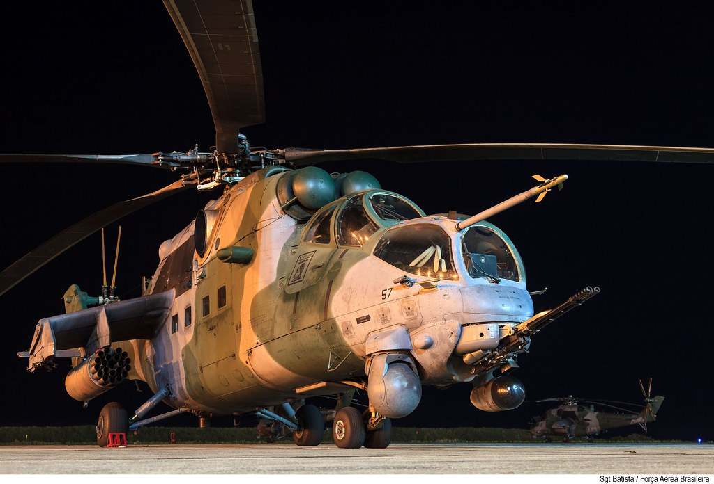

SOBRE A AERONAVE
Desenvolvido a partir do helicóptero russo Mi-24, o Mi-35M incorpora várias inovações tecnológicas, mantendo as características principais de seu antecessor, que são o poder de fogo, a blindagem e a robustez. O helicóptero é capaz de realizar missões em ambientes de baixa visibilidade, nos períodos diurno e noturno. Possui um canhão de 23mm de alta cadência fixado a uma torreta móvel sob o seu nariz e pode, ainda, ser configurado com lançadores de mísseis ar-superfície Ataka e foguetes não-guiados de 80mm.
Há 10 anos, no dia 17 de abril de 2010, ocorreu, na Base Aérea de Porto Velho (RO), a cerimônia oficial de incorporação dos helicópteros Mi-35M na Força Aérea Brasileira (FAB). As atividades da cerimônia de entrega foram iniciadas no dia anterior, com a realização de uma Missa em Ação de Graças e com o Lançamento da Pedra Fundamental do Esquadrão Poti (2º/8º GAV), marcando definitivamente a presença da Unidade Aérea na capital rondoniense.

FONTE: clique aqui
ASSISTA A UM VÍDEO DA AERONAVE AQUI: clique aqui
voltar